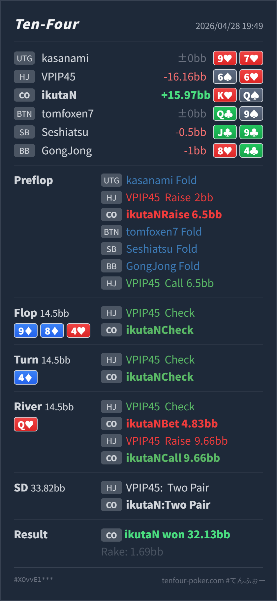

Preflop
良い寄りK♥Q♠ は blocker と high-card equity があり、3bet mix に入れられる hand です。
GTO基準で大きな問題はありません。Preflop の K♥Q♠ 3bet は、HJ 2BB open に対する mix / blocker 寄りの攻めとして成立します。flop と turn の check back はかなり良く、river Q♥ で top pair になってから 1/3 pot の thin value を打つのも自然です。min raise への call も、必要勝率が低く、Hero の hand が river bet range の上側にいるため良い判断です。ただし「AQo は preflop で必ず 4bet」と消し切るのは強すぎます。
K♥Q♠6♠6♥9♦ 8♦ 4♥ / 4♦ / Q♥K♥Q♠ は HJ open に対して continue 可能です。3bet は pure value ではなく、blocker と position を使った thin な攻めとして扱います。9♦ 8♦ 4♥ は HJ call range にもよく当たるため、no diamond の K♥Q♠ で無理に c-bet しない判断は良いです。4♦ は paired board かつ flush 完成 card です。ここで no diamond の overcard を bluff に回さなかったのも良いです。Q♥ の small value は良いです。raise された後も、min raise なので KQ は十分 call できます。ただし相手の強い range を消し切るのではなく、価格が良いから call する、という整理がより正確です。K♥Q♠6♠6♥2BB, CO raise 6.5BB, BTN fold, SB fold, BB fold, HJ call9♦ 8♦ 4♥ / 4♦ / Q♥4.83BB, HJ raise 9.66BB, CO call32.13BB
良い寄りK♥Q♠ は blocker と high-card equity があり、3bet mix に入れられる hand です。
9♦ 8♦ 4♥良いK♥Q♠ は no pair / no diamond の two overcards で、backdoor も薄いです。
4♦良いK♥Q♠ は no diamond で、raise や barrel に耐える equity / blocker が足りません。
Q♥良いK♥Q♠ は thin value hand です。AQ には負けますが、多くの weaker showdown hand から小さく取れます。
良いK♥Q♠ は Hero の river value range の中で十分上側です。
| 論点 | その場で置いた見立て | どこがズレたか | 次回の基準 |
|---|---|---|---|
| turn check-check 後の相手レンジ | 色もドローもかなり薄くなったように見える | 攻撃的な draw は減りますが、diamond flush、full house、trips、slowplay はまだ残ります。薄いのは「強く打ってくる頻度」であって、存在そのものではありません。 | check-check で強い hand をゼロにはしない。river raise では、価格と自分の range 内位置で判断する |
| AQ の扱い | AQo は 4bet、AQs は call が自然なので、river raise の強い Qx は限定的に見える | AQo も相手やサイズ次第で call に残ることがあります。AQs や flush / full house も消し切れません。 | blocker 推定は補助に留め、min raise には pot odds と自分の hand の強さを先に見る |
| ストリート | その時点の見え方 | 実ハンドの位置づけ | 評価 | その場の一手 |
|---|---|---|---|---|
| Preflop | HJ 2BB open に対して CO は position があり、size が小さい分だけ continue しやすいです。一方、HJ open はまだ強めなので、CO の 3bet は広げすぎ注意です。 | K♥Q♠ は blocker と high-card equity があり、3bet mix に入れられる hand です。 | 良い寄り | 3bet は問題ありません。call に残す選択もあり、3bet した場合は postflop で無理に押し切らない前提です。 |
Flop 9♦ 8♦ 4♥ | HJ の call range は 99-66、suited broadway、diamond draw を持ちます。CO は overpair を持つ一方、board 自体は caller 側にもかなり絡みます。 | K♥Q♠ は no pair / no diamond の two overcards で、backdoor も薄いです。 | 良い | check back が良いです。small c-bet を打つなら range 全体の戦略ですが、この実ハンド単体では無理に打つ必要はありません。 |
Turn 4♦ | board が pair し、diamond flush も完成しています。HJ の check は弱さも含みますが、trap や showdown hand も十分あります。 | K♥Q♠ は no diamond で、raise や barrel に耐える equity / blocker が足りません。 | 良い | check back が自然です。ここで bluff しない判断はかなり良いです。 |
River Q♥ | HJ が3回 check し、Hero は top pair になりました。HJ には JJ/TT/9x/8x/77-66 のような bluff-catcher が残ります。 | K♥Q♠ は thin value hand です。AQ には負けますが、多くの weaker showdown hand から小さく取れます。 | 良い | 4.83BB の small bet は良いです。大きく打つと worse の call が減るので、このサイズが扱いやすいです。 |
| River raise 対応 | HJ の min raise は full house / flush / AQ もありますが、サイズが非常に安く、overplayed pair や blocker 的な raise も混ざり得ます。 | K♥Q♠ は Hero の river value range の中で十分上側です。 | 良い | call で問題ありません。根拠は「強い hand がない」ではなく、「この価格で KQ を fold するほど相手 range が value だけに寄っていない」です。 |
JJ/TT/9x/8x/66-77 のような下の showdown hand を呼ぶための bet です。今回のような 1/3 pot は目的と合っています。6♠6♥ の river min raise は、GTOというより「安い bet に対して降りたくない / 降ろしたい」の混ざった実戦的な過剰反応です。このタイプがいるなら、Hero は small value を厚めに打ち、min raise には強めの top pair 以上で広めに call できます。AQ、flush、full house を消しすぎないことが大事です。今回の call は相手を弱いと決め打ったからではなく、価格が安すぎるため成立しています。